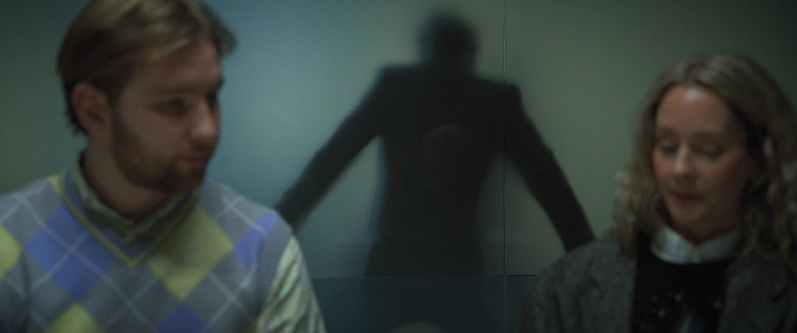

A speculative glimpse into the future workplace, presented in the form of a short film commissioned by A house.
"Remote work offers many benefits but often comes at the expense of connection between colleagues. In the future, virtual technology could enable interactions once deemed impossible in professional settings. A virtual space without lasting physical consequences allows for actions without limitations. By expressing strong emotions, a sense of relief and clarity can be achieved — a process known as catharsis."
Katarsis was directed, written, and produced by Emilia Lind, Jonatan Modin and Sofia Di Marco, and made possible with support from Rockson, Sellpy, and Nyfosa.